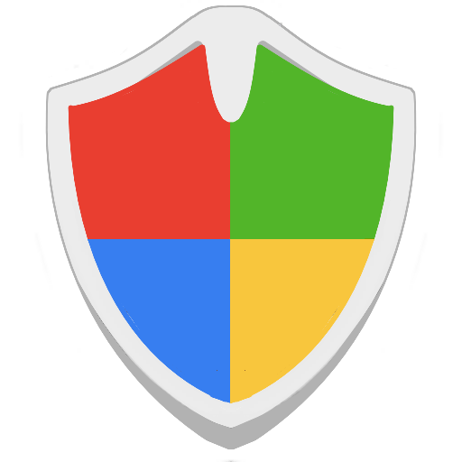

A critical security threat has been detected on your system. Windows has been locked to prevent data loss and unauthorized access to your personal information.
Error Code:#WIN32-DW6VB36
Status:SYSTEM BLOCKED
MICROSOFT SUPPORT
Call now to restore access
Windows Defender Firewall

Firewall & Network Protection
Real-time threat monitoring active
ACTIVE THREATS
0
COMPROMISED DATA
0 MB
BREACH SPEED
0 KB/s
SECURITY HOTLINE
NETWORK ACTIVITY MONITOR
CURRENT SECURITY EVENTS
192.168.1.105 - Port scan detected
10.0.0.47 - Malicious payload blocked
172.16.254.1 - Unauthorized access denied
203.0.113.42 - DDoS attack mitigated
198.51.100.33 - Brute force blocked
Windows Security - Virus & Threat Protection
Quick Scan in Progress
Scanning for threats and suspicious activity
SCANNING
0
THREATS FOUND
0
FILES SCANNED
MICROSOFT SECURITY
IMMEDIATE HELP REQUIRED
THREAT DETECTION LOG
Real-time virus scanning
MICROSOFT SUPPORT
Call for help
System Monitor
Live Processing
Real-time CPU usage
0%
CPU Usage
0%
Memory
CPU Load0%
Are you 18 or older?
You must be 18 years or older to view this content.
Age verification required
Security Alert Video
3.4M views2 hours ago
Microsoft Security Channel
125K subscribers
About this video
Important security alert regarding your system. Watch this video for critical information on protecting your Windows system.
Comments (45)
JS
John Smith 2 hours ago
This is very important information. Thanks for sharing!
Comments (45)
This is very important information. Thanks for sharing!
Everyone should watch this video immediately.